本文介绍了 Step-3，这是一款拥有 3210 亿参数的视觉语言模型（VLM），采用硬件感知的模型-系统协同设计，专门针对降低解码成本进行优化。Step-3 在两个关键维度上进行了创新：（1）一种新颖的多矩阵分解注意力机制（MFA），能够显著减少 KV 缓存大小和计算量，同时保持高注意力表达能力；（2）注意力-前馈网络解聚（AFD），这是一种分布式推理系统，将注意力层和 FFN 层解聚到专门的子系统中。这种协同设计实现了前所未有的成本效益：Step-3 显著降低了与 DeepSeek-V3 和 Qwen3 MoE 235B 等模型相比的理论解码成本，且随着上下文变长，优势愈发明显。Step-3 在保持低成本的同时，每token激活 380 亿参数（超过 DeepSeek-V3 和 Qwen3 MoE 235B），表明硬件对齐的注意力算术强度、MoE 稀疏度和 AFD 对于成本效益至关重要。我们在 DeepSeek-V3 擅长的场景下进行了正面比较。在 Hopper GPU 上，我们的实现在 50ms TPOT SLA 下实现了每 GPU 每秒最高 4,039 个token的解码吞吐量（4K 上下文、FP8、无 MTP）。这比 DeepSeek-V3 在相同设置下的 2,324 更高，并为 LLM 解码确立了新的帕累托前沿。
| 项目 | 内容 |
|---|---|
| 论文 ID | 2507.19427 |
| 标题 | Step-3 is Large yet Affordable: Model-system Co-design for Cost-effective Decoding |
| 作者 | StepFun Inc. |
| 单位 | StepFun Inc. |
| 会议/期刊 | arXiv |
| 原文保存位置 | ~/.openclaw/workspace/papers/20260313_Step-3/source/ |
| 报告生成日期 | 2026-03-13 |
本文介绍了 Step-3 的模型-系统协同设计，专门为测试时扩展范式（test-time scaling paradigm）优化，主要目标是降低解码成本。Step-3 拥有 3210 亿总参数，而每个文本token激活 380 亿参数。作者将证明，尽管 Step-3 处于数千亿参数规模，且激活参数略大于 DeepSeek V3 等代表性开源模型，但通过模型-系统协同设计，实现了显著更低的解码成本。
研究者专注于优化解码阶段，原因包括：1）解码阶段的每token成本最高（因为 MFU 较低）；2）对于推理模型，更长的思考意味着更高的智能，因此降低解码成本可以转化为固定预算场景下更高的智能；3）更快、更便宜的解码也能加速强化学习训练；4）优化空间很大，技术上也更有趣。
最近出现了几款大型开源模型。一些在传统 Transformer 基础上探索了新颖的架构变化。创新主要集中在两个主要 Transformer 组件上——在推理期间有新的注意力设计来减少 KV 缓存开销，以及有 MoE 结构来增强 FFN 同时限制计算需求的增长。
作者还进行了模型架构探索，例如通过 MoE 模型开发（Step-2，2023年底）和 MFA（2024年底发布的新注意力架构）。在观察近期开源模型的过程中，发现了两个常见的次优实践：
Figure 1 展示了 Step-3 与近期模型在激活参数和解码成本方面的帕累托前沿。较深区域是 GQA 模型的帕累托前沿。
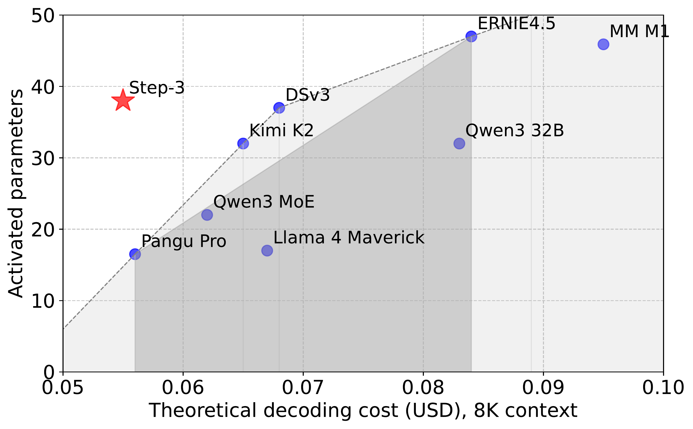
图 1：近期模型在激活参数和解码成本方面的帕累托前沿。较深区域是 GQA 模型的帕累托前沿。注：Step-3 也具有最高的注意力有效秩，与 DSv3 相同，是 Qwen3 MoE 235B 和 Kimi K2 等模型的两倍。
:::
本文工作基于 Prefill-Decoding（PD）解聚的假设。通过它，可以专注于优化解码，而不必担心对预填充的影响。读者将看到部署 AFD 的类似好处——即如何实现注意力与 FFN 设计的分而治之。
关键发现总结：
解码成本不仅取决于参数数量： 总参数或激活参数数量都不是解码成本的好指标。例如，Qwen-3 MoE 235B 在 H20（其最佳硬件）上仅比 DSv3（在 H800 上）低 10% 的理论解码成本，尽管其总参数少 65%，激活参数少 40%。Step-3 尽管总参数介于两模型之间且激活参数最多，却实现了两者约 40% 的解码成本降低。
注意力设计主导解码成本： 有了 AFD，可以分别以最成本效益的方式运行注意力和 FFN，然后注意力设计对解码成本的影响变得明显大于（总或激活）参数数量。
KV 缓存大小不是影响注意力成本的唯一因素： 某些注意力设计需要过多的计算（算术强度过高），无法在低成本硬件平台上高效运行。更重要的是，本文首次展示了这个问题确实影响最终解码成本，从而为 Step-3 实现显著成本节省留出了很大空间。
MoE 需要硬件感知设计： MoE 稀疏度必须共同考虑硬件的计算能力、内存带宽和网络带宽。过度稀疏的模型可能在表面上激活参数较少，但在当今硬件上运行效率很低。
解码加速的魔鬼在细节中： 线性注意力、量化和 MTP 都是加速解码的有前景方向。然而，一些看似微小的设计点可能会失去大部分解码收益。
AFD 部署： 作者认为这是比现有解决方案更优越的解码系统设计，因为它具有以下独特优势：促进分而治之的模型设计；轻松扩展注意力实例以处理动态上下文长度；始终为 FFN 保持理想的批大小以实现高 MFU，独立于注意力；通过完美平衡的流水线重叠通信开销；降低与 DeepEP 相比的规模要求，获得更好的可靠性和更少的 EP 不平衡；允许使用异构硬件进一步降低解码成本。
在深入模型-系统协同设计细节之前，先简要描述 Step-3。
Step-3 基于 Transformer 架构构建，每个 Transformer 块包含一个注意力模块和一个前馈网络（FFN）。对于注意力机制，引入了多矩阵分解注意力（MFA），它在 Query-Key（QK）电路中利用低秩矩阵分解。这使得注意力头的数量和维度能够进行参数高效的扩展，同时最小化 KV 缓存开销。对于 FFN，采用了受 DeepSeekMoE 启发的共享专家设计，包含 MoE 层。配置包括 61 个 Transformer 层，隐藏维度为 7168。
对于 MFA，配置了 64 个查询头，它们共享一个 Key 头和一个 Value 头，维度均为 256。查询维度从 7168 下投影到较低的 2048 秩，经过归一化，然后上投影到 64×256。
MoE 层应用于除前四层和最后一层之外的所有 FFN。在此设置下，Step-3 包含 3160 亿参数，每个 token 激活 380 亿。还有额外的 50 亿参数的视觉编码器，本文不讨论，因为它与解码无关。
表 1：Step-3 模型卡片
| 项目 | 数值 |
|---|---|
| 层数 | 61 |
| 隐藏维度 | 7168 |
| 注意力机制 | MFA |
| 低秩查询维度 | 2048 |
| 查询头数 | 64 |
| 头维度 | 256 |
| 共享专家数 | 1 |
| MoE 层配置 | 除前四层和最后一层外的所有层 |
| 总参数（LLM） | 3160 亿 |
| 每token激活参数 | 380 亿 |
| 总参数（VLM） | 3210 亿 |
首先描述 Step-3 推理系统，这可能是首批利用 Attention-FFN Disaggregation（AFD）想法并在高吞吐量解码中实现严格 SLO 约束的生产级服务系统之一。首先详细说明 AFD 设计的原理。
原理： LLM 通常由交替的注意力层和 FFN 层组成，每种层表现出不同的计算和内存访问模式。例如，注意力层通常参数较少，但需要为每个 token 存储键值缓存（KV-cache），这在推理期间是内存密集型的。相比之下，FFN 层通常占用更大的参数数量，特别是对于 MoE 模型，但不需要存储中间计算结果。
现有的服务系统通常将这些层视为整体块，忽略其内在差异，导致 GPU 利用率不佳。因此，通过解聚注意力和 FFN 组件，可以更好地发挥它们各自的硬件亲和力并优化吞吐量。此外，解聚提供了一个机会做出假设：注意力和 FFN 部分都可以在理想的硬件条件下运行，分别实现高 MFU。
这个想法基于 Prefill-Decoding（PD）解聚方法，该方法主张分离预填充和解码阶段以优化资源利用。因此，专注于使用 AFD 的解码阶段，而不用担心对预填充的影响。使用这种分而治之的方法，分析将变得更加简单。
AFD 将注意力和 FFN 层部署到独立的 GPU 集上。这种架构分离允许每个子系统采用不同的并行策略，最适合它们的计算特性。在逐层解码期间，隐藏状态通过高速网络通信在注意力和 FFN 子系统之间传输。这种交错通信模式形成了一个紧密耦合的流水线，其中注意力和 FFN 彼此充当上游和下游阶段。
此外，网络传输延迟也必须考虑。在这种细粒度场景中，其大小与注意力和 FFN 阶段的计算时间相当。这意味着在协调流水线时也应考虑通信阶段。
为了达到最佳整体性能，必须精确匹配两边的处理延迟；任何不平衡都会导致流水线停滞或资源利用不足。因此，必须共同协调 A/F 和通信阶段的性能。
AFD 设计目标总结如下：
性能目标：通过 3 阶段流水线实现 50ms 时间每输出 token（TPOT，≥20 tokens/sec），每个阶段 16.6ms（用于 A/F/通信）。这里的时间是跨所有模型层累积的。（或者，也可以使用 4 阶段流水线：A → 通信 → F → 通信，每个阶段 12.5ms 预算。）
流水线优化：资源分配和性能调整，使 A/F/通信多阶段流水线完美重叠，隐藏通信延迟。
A/F 独立设计：借助 AFD，可以独立分析注意力和 FFN 的操作特性。这种分离不仅能够对每个子系统进行最佳优化，还允许对模型本身进行灵活的架构修改。
硬件选择：根据注意力和 FFN 子系统的操作特性，为它们选择独立的硬件。
DeepSeek EP： 大专家并行（EP）架构在 DeepSeek-V3 中引入以提高服务效率。虽然 EP 还通过将专家权重分配到多个设备来促进批处理放大，但作者认为与 AFD 相比这种方法存在根本性局限。
部署规模： AFD 的关键优势是能够在更小的部署规模上高效运行。如前所述，DSv3 需要 320 GPU 进行解码实例，而 Step-3 只需 32 GPU。如果部署规模显著扩大，网络拥塞将成为关键问题，导致延迟增加和不可预测。这种高延迟会严重影响服务系统满足推理 SLA 的能力。
上下文长度效率： 长上下文处理对 EP 的注意力层负担不成比例，导致 FFN 因固定专家节点分配而未被充分利用。AFD 通过注意力和 FFN 的解聚扩展来解决这个问题。将在不同上下文长度上展示定量结果。
负载不平衡问题： EP 存在著名的 workload 不平衡问题。DeepSeek-V3 使用重复专家以临时方式平衡每个 GPU 的工作负载。但这种方法会带来额外的内存开销，并且对动态工作负载变化不灵活，尤其是当数据分布发生显著变化时。另一方面，AFD 可以轻松利用混合 TP-EP 策略在计算效率、通信流量和负载平衡之间取得平衡。
异构硬件约束： AFD 支持更灵活的硬件部署，即注意力和 FFN 实例可以映射到针对其各自计算和内存需求定制的异构硬件，而 EP 强制同构硬件部署，限制专业化优势。
性能建模： 下面的分析框架利用了注意力和 FFN 的架构解聚。由于它们不同的计算特性，这种分离提供了方法论清晰度，能够更准确地建模性能上限，同时显著缩小理论预测与实证测量之间的差距。相反，仅 EP 架构缺乏这种分而治之的清晰度，在对耦合子系统建模时存在固有的分析歧义。
特别需要指出的是，AFD 不是 EP 的替代品，而是互补方法。实际上，Step-3 可以与 TP-EP 策略结合使用，以获得更好的性能和成本效益。上述分析针对的是不采用 AFD 的仅 EP 架构，常见于现有服务系统。
Megascale-Infer： 据作者所知，Megascale-Infer 是第一个利用 AFD 想法构建解聚服务系统的系统。然而，它专注于高吞吐量，而不是同时实现低延迟目标（即 50ms TPOT）。实际上，根据报告，Megascale-Infer 的每token延迟为 150ms，远高于作者的延迟。这种高延迟不适用于聊天机器人等实时应用。此外，Step-3 的核心是模型-系统协同设计，并使用 AFD 想法为注意力和 FFN 层设计 Step-3 的模型架构，而 Megascale-Infer 主要只关注系统级优化。作者认为协同设计带来了更多机会来彻底发挥硬件能力。
在重要的假设下，即借助 AFD，注意力和 FFN 部分可以在接近硬件限制的情况下运行，现在深入研究每个模型的理论成本。将 Step-3 与近期发布的几个模型进行比较：DSv3、Kimi K2、Qwen3-235B-A22B（简称 Qwen3-MoE）、Qwen3-32B、Llama 4 Maverick、MiniMax M1（MM M1）、ERNIE 4.5 和 Pangu Pro MoE。
表 2：8K 上下文长度下每个解码 token 的理论计算和内存访问
| 模型 | KV/状态内存访问（字节） | 注意力计算无 Linear（FLOPs） | 注意力前后 Linear（FLOPs） | FFN 计算（FLOPs） |
|---|---|---|---|---|
| DSv3 | $2.88 \times 10^8$ $1.47 \times 10^{11}$ $2.28 \times 10^{10}$ $4.84 \times 10^{10}$||||
| Kimi K2 | $2.88 \times 10^8$ $7.37 \times 10^{10}$ $1.23 \times 10^{10}$ $4.84 \times 10^{10}$||||
| Qwen3 MoE | $7.89 \times 10^8$ $2.52 \times 10^{10}$ $1.34 \times 10^{10}$ $2.84 \times 10^{10}$||||
| Qwen3 32B | $1.07 \times 10^9$ $1.72 \times 10^{10}$ $1.21 \times 10^{10}$ $5.03 \times 10^{10}$||||
| Llama 4 M | $1.01 \times 10^9$ $8.05 \times 10^{9}$ $6.04 \times 10^{9}$ $2.42 \times 10^{10}$||||
| MM M1 | $9.23 \times 10^8$ $3.42 \times 10^9$ $3.75 \times 10^{10}$ $5.44 \times 10^{10}$||||
| ERNIE 4.5 | $9.06 \times 10^8$ $1.45 \times 10^{10}$ $1.63 \times 10^{10}$ $7.61 \times 10^{10}$||||
| Pangu Pro | $8.05 \times 10^8$ $8.05 \times 10^9$ $6.04 \times 10^9$ $2.38 \times 10^{10}$||||
| Step-3 | $2.56 \times 10^8$ $3.27 \times 10^{10}$ $2.07 \times 10^{10}$ $5.33 \times 10^{10}$
表 3：32K 上下文长度下每个解码 token 的理论计算和内存访问
| 模型 | KV/状态内存访问（字节） | 注意力计算无 Linear（FLOPs） | 注意力前后 Linear（FLOPs） | FFN 计算（FLOPs） |
|---|---|---|---|---|
| DSv3 | $1.15 \times 10^9$ $5.89 \times 10^{11}$ $2.28 \times 10^{10}$ $4.84 \times 10^{10}$||||
| Kimi K2 | $1.15 \times 10^9$ $2.95 \times 10^{11}$ $1.23 \times 10^{10}$ $4.84 \times 10^{10}$||||
| Qwen3 MoE | $3.15 \times 10^9$ $1.01 \times 10^{11}$ $1.34 \times 10^{10}$ $2.84 \times 10^{10}$||||
| Qwen3 32B | $4.29 \times 10^9$ $6.87 \times 10^{10}$ $1.21 \times 10^{10}$ $5.03 \times 10^{10}$||||
| Llama 4 M | $2.21 \times 10^9$ $1.41 \times 10^{10}$ $6.04 \times 10^{9}$ $2.42 \times 10^{10}$||||
| MM M1 | $1.93 \times 10^9$ $1.15 \times 10^{10}$ $3.75 \times 10^{10}$ $5.44 \times 10^{10}$||||
| ERNIE 4.5 | $3.62 \times 10^9$ $5.80 \times 10^{10}$ $1.63 \times 10^{10}$ $7.61 \times 10^{10}$||||
| Pangu Pro | $3.22 \times 10^9$ $3.22 \times 10^{10}$ $6.04 \times 10^{9}$ $2.38 \times 10^{10}$||||
| Step-3 | $1.02 \times 10^9$ $1.31 \times 10^{11}$ $2.07 \times 10^{10}$ $5.33 \times 10^{10}$
首先检查解码每个 token 所需的整体内存访问和计算操作。
考虑到各种量化方法直接影响内存访问和浮点计算类型，为每个模型选择广泛使用的量化版本：
MLA 家族： DSv3 官方实现在注意力中使用 BF16，其他部分使用 FP8。然而，认识到开源社区中存在 MLA 的 FP8 量化版本，对整个模型采用 FP8 量化。对 Kimi K2 应用相同的量化。
GQA 家族： Qwen3 官方发布包含完整 FP8 量化。其他模型如 ERNIE 4.5 和 Pangu Pro MoE，为与 Qwen3 保持一致，也使用相同量化。
混合模型： Llama 4 Maverick 和 MiniMax M1 的官方量化较为保守，尤其是注意力部分。由于混合注意力模型的量化在很大程度上未被探索，作者主要遵循官方设置，即对完整注意力层使用 BF16 KV，因为它们对长上下文任务至关重要。MiniMax M1 的 Lightning Attention 状态使用 FP32，与其官方设置相同。给 Llama 4 Maverick 使用 FP8 进行分块 GQA 注意力以示优惠。对于所有其他部分，采用与其他评估模型相同的激进 FP8 量化，以进行公平比较。
Step-3： 成功将 Step-3 量化为全 FP8 模型而未丢失模型精度。因此使用全 FP8 量化，这与 MLA 和 GQA 家族一致。
表 4：加速器规格比较
| 加速器 | 每卡每小时价格（美元） | BF16/FP16 FLOPs | FP8 FLOPs | 内存带宽（B/s） | 计算-带宽比（roofline） |
|---|---|---|---|---|---|
| NVIDIA H800 | 2 | $9.89 \times 10^{14}$ $1.98 \times 10^{15}$ $3.35 \times 10^{12}$591 | |||
| NVIDIA H20 | 0.8 | $1.48 \times 10^{14}$ $2.96 \times 10^{14}$ $4.00 \times 10^{12}$74 | |||
| NVIDIA A800 | 0.75 | $3.12 \times 10^{14}$N/A | $2.00 \times 10^{12}$156 | ||
| Ascend 910B | 0.67* | $2.80 \times 10^{14}$N/A | $1.60 \times 10^{12}$175 |
表 5：不同加速器的单位成本
| 加速器 | 每 FLOPs 成本 | 每字节内存访问成本 |
|---|---|---|
| H800 | $2.80 \times 10^{-19}$ $1.66 \times 10^{-16}$||
| H20 | $7.51 \times 10^{-19}$ $5.56 \times 10^{-17}$||
| A800 | $6.68 \times 10^{-19}$ $1.04 \times 10^{-16}$||
| 910B | $6.65 \times 10^{-19}$ $1.16 \times 10^{-16}$
注意力部分的理论成本是注意力核心计算和内存访问成本中的较大者，加上前后的线性计算： $$\max(FLOP_{Attn}U_{FLOP}, Byte_{KV}U_{byte}) + FLOP_{Linear}U_{FLOP}$$
假设使用 AFD 可以将 FFN 部分保持在计算绑定区域，FFN 部分的理论成本就是计算成本 $FLOP_{FFN}U_{FLOP}$。
表 6：每个模型在每种硬件上的理论解码成本（美元/每百万 token）
| 模型 | 8K 注意力成本 | 8K FFN 成本 | 32K 注意力成本 | 32K FFN 成本 |
|---|---|---|---|---|
| DSv3 | 0.054 | 0.014 | 0.197 | 0.014 |
| Kimi K2 | 0.051 | 0.014 | 0.194 | 0.014 |
| Qwen3 MoE | 0.135 | 0.008 | 0.527 | 0.008 |
| Qwen3 32B | 0.181 | 0.014 | 0.716 | 0.014 |
| Llama 4 M | 0.169 | 0.007 | 0.369 | 0.007 |
| MM M1 | 0.164 | 0.015 | 0.330 | 0.015 |
| ERNIE 4.5 | 0.155 | 0.021 | 0.606 | 0.021 |
| Pangu Pro MoE | 0.135 | 0.007 | 0.536 | 0.007 |
| Step-3 | 0.048 | 0.015 | 0.176 | 0.015 |
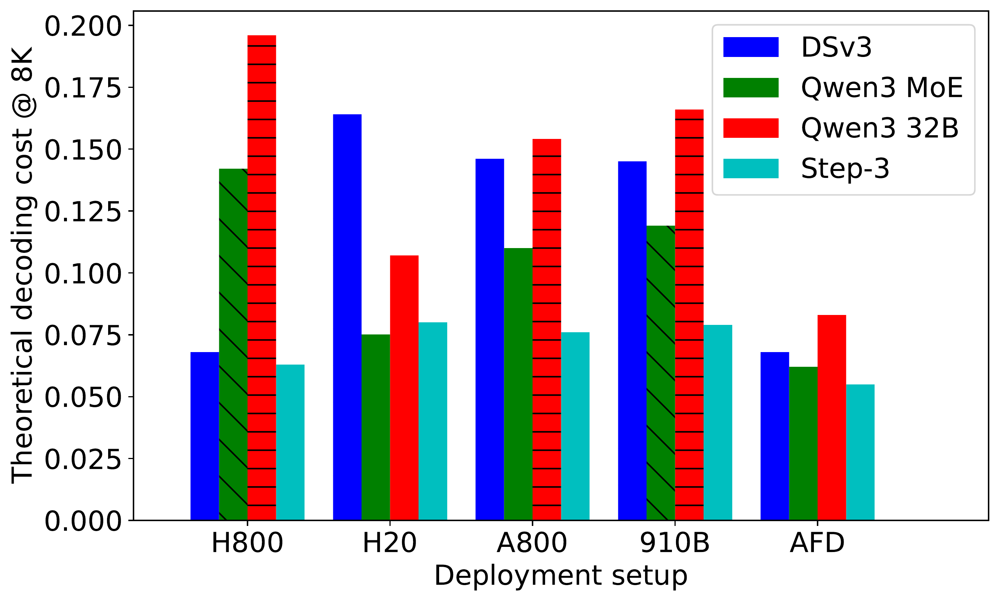
图 2：8K 上下文长度下不同模型的解码成本（每百万 token）。
:::
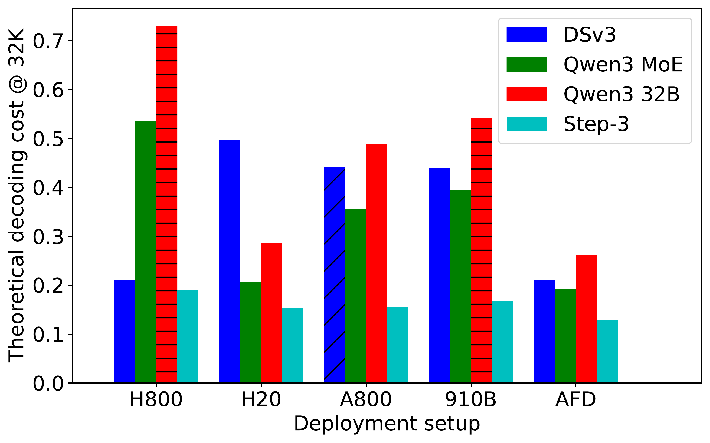
图 3：32K 上下文长度下不同模型的解码成本（每百万 token）。
:::
观察 1：Step-3 具有最低的解码成本。 在 8K 上下文长度时，Step-3 最具成本效益，每百万解码 token 价格为 $0.055（使用 AFD、H800 和 H20），低于 DSv3 的 $0.068（使用 EP 和 H800）和 Qwen MoE 的 $0.062（使用 AFD、H800 和 H20）。在 32K 上下文长度时优势更大，Step-3 为 $0.129，显著低于 DSv3 的 $0.211 和 Qwen-3 MoE 的 $0.193。
观察 2：总参数和激活参数数量不是解码成本的好指标。 Qwen3 32B 的总参数远少于 DSv3 和 Step-3，激活参数也略少。然而，Qwen3 32B 的解码成本是图中所有模型中最高的。
观察 3：注意力成本主导总解码成本。 在表 6 中，8K 上下文长度时，注意力已经明显比 FFN 贵得多。随着上下文变长，差距迅速扩大，因为 FFN 成本与上下文长度无关。这意味着注意力设计比激活参数数量重要得多——这就是观察 2 的原因。
观察 4：硬件友好性。 DSv3 的 MLA 对 H800 以外的硬件相当不友好，在比 H800 弱的硬件上运行会导致成本翻数倍。像 Qwen3 这样的 GQA 模型由于 KV 较大，对 H20 以外的硬件也不友好。相比之下，Step-3 的 MFA 更硬件友好，在较弱硬件上成本差异最小。
线性注意力和混合模型。 线性注意力是有前景的方向，但在长上下文任务中仍面临挑战。实用的解决方案是"混合模型"，由两种类型的注意力层组成；大多数是线性注意力，其余是传统全注意力。例如，MM M1 使用混合架构，包含 70 层线性注意力和 10 层 GQA 全注意力，与全 GQA 模型如 Qwen3 相比，KV 增长明显更慢。Llama 4 Maverick 的设计类似，只是层数不同。
然而，这样的混合模型对推理系统有两个额外挑战。首先，虽然全注意力层数量似乎很小，但它们可能会破坏使用线性注意力节省 KV 缓存的初衷。MM M1 和 Llama 4 Maverick 的全注意力部分（基于官方量化方案）的 KV 缓存量比 Step-3 整个模型还大。无论线性注意力层节省多少，无论上下文多长，内存访问总量都将大于 Step-3。其次，每层花费的时间将严重不平衡——当使用长上下文运行时，全 GQA 层比线性注意力层花费的时间多得多。
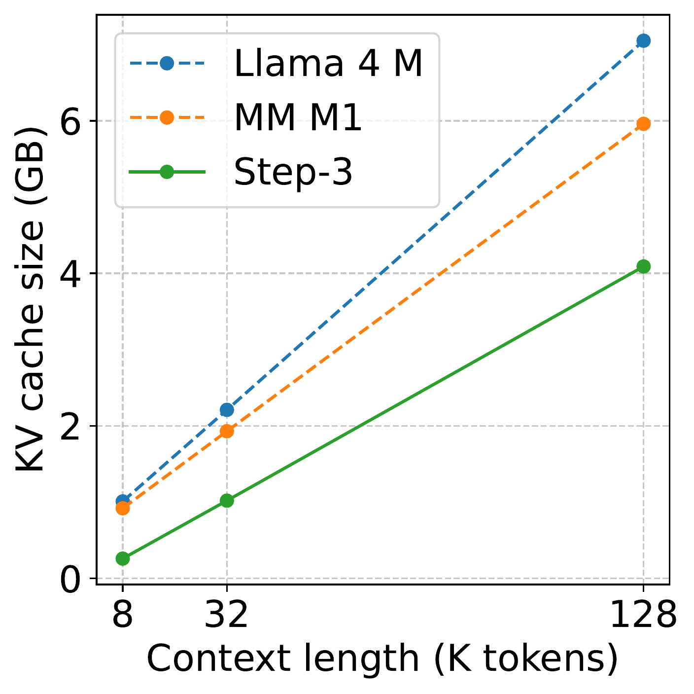
图 4：混合线性注意力模型的 KV 缓存大小比较。
:::
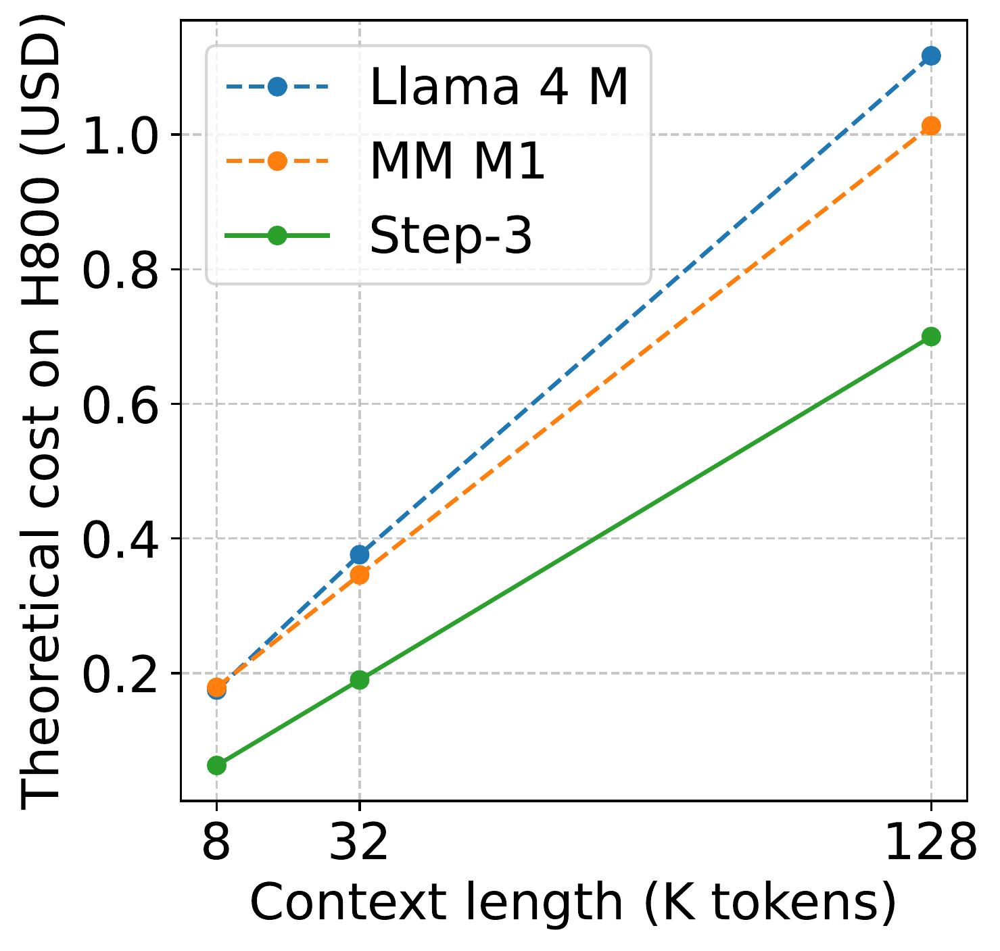
图 5：H800 上与混合线性注意力模型（如 MiniMax M1 和 Llama 4 Maverick）的解码成本比较。
:::
"硬件优化设计"——用于训练还是解码？ 设计针对给定硬件优化的模型并非新概念。本文包括了 Pangu Pro MoE，这是一款据称专门为华为自研加速器 910B 优化的模型。
然而，在分析中，Pangu Pro MoE 在 910B 上的解码成本并不低——理论上比 Step-3 高得多。记住，Pangu Pro MoE 只有 165 亿激活参数，不足 Step-3 的一半！显然，Pangu Pro MoE 在 910B 上的解码根本不具有成本效益。
公平地说，Pangu Pro MoE 的主要焦点不在解码成本上，而在训练上。还展示了每百万 token 训练成本的粗略估计，假设 100% MFU，完全基于理论 FLOPs。可以看到 Pangu Pro MoE 的训练成本确实比 Step-3 便宜 50% 以上，反映了激活参数的差异。
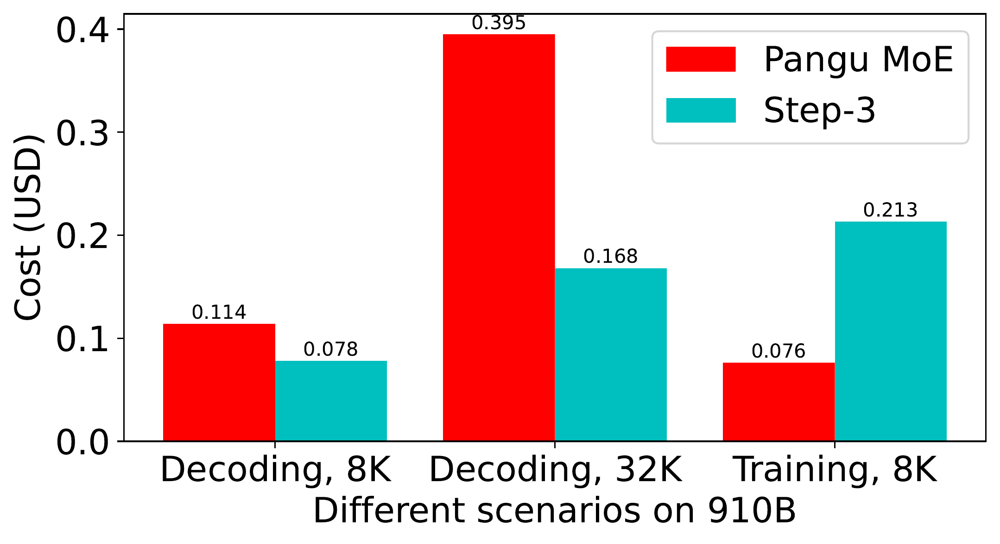
图 6：Step-3 和 Pangu Pro MoE 具有非常不同的解码成本和训练成本趋势。
:::
细心的读者可能注意到，在表 2 和表 3 中，Step-3 的 MFA 与 DSv3 的 MLA 相比，KV 内存访问量仅减少约 10%。然而在表 6 中，Step-3 的注意力成本在很多情况下降低了一半甚至更多。结果源于 MFA 的设计。
如前文所述，每个注意力设计都有一种称为算术强度的固有属性。它是从内存访问的每个字节所需的算术运算比率。不同的批大小或上下文长度不会改变算术强度。
注意力算术强度与硬件的"计算-带宽比"（或称为 roofline）匹配越好，就越有可能在该硬件上实现良好效率。否则，可能会出现显著瓶颈，要么是计算绑定要么是内存绑定。
使用 Step-3 的 MFA 设计，其算术强度为 128（假设 8 位 KV 量化）。它更接近 A800（roofline 为 156）和 910B（roofline 为 175），而不是 DSv3 的 MLA（算术强度为 512）。在 H20（roofline 为 74）上，差距也不大，与 Qwen3 MoE（算术强度为 32）相比。在图 7 中，展示了上述模型和硬件。展示了从 8K 到 32K，上下文长度如何影响每个模型的计算和内存访问。相应地，还绘制了基于其计算-带宽比的每种硬件的斜线。
在图 7 中，还可以清楚地看到 Step-3 的 MFA 同时实现了低计算和低内存访问。也就是说，其所需计算量是 DSv3 的四分之一，所需内存访问量是 Qwen3 的三分之一。这使 Step-3 即使在 roofline 与 Step-3 不太匹配的加速器上也能保持低成本。
Step-3 的 MFA 实现了更平衡的算术强度和低开销，而没有偷工减料。实际上，其注意力有效秩为 16,384，与 DSv3 的 MLA 相同，大于 Qwen3 MoE 的 8,192。
Step-3 选择略低于大多数硬件 roofline 的算术强度，为未来优化留出空间，如量化和 MTP。
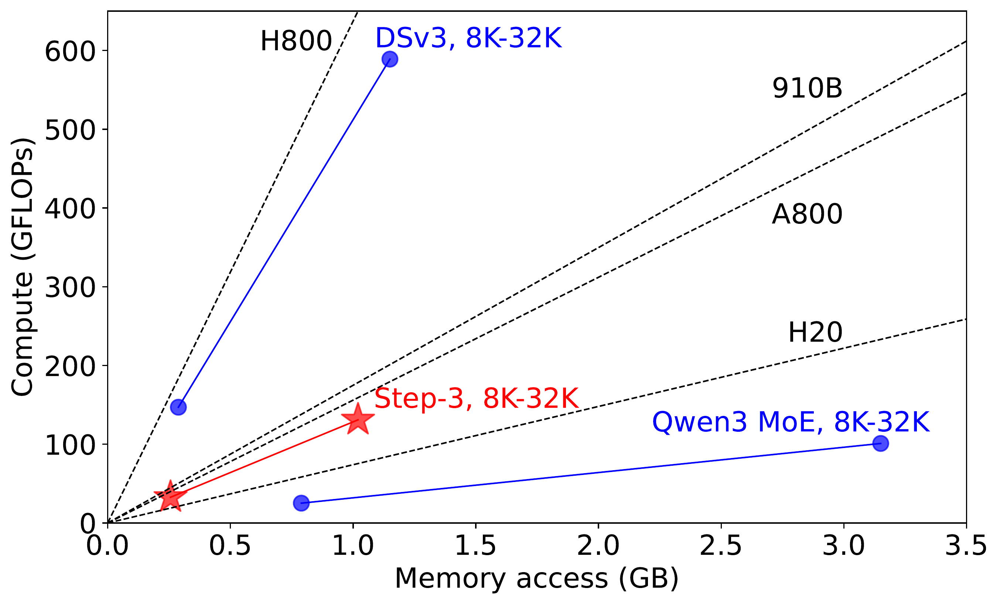
图 7：不同注意力设计在解码期间的计算和内存访问。包括 DSv3 的 MLA、Qwen3 MoE 的 GQA 和 Step-3 的 MFA。还绘制了不同硬件的计算-内存-带宽比。
:::
量化： 所有模型都可以采用比本文假设的更激进的量化策略。特别值得注意的量化方法是低bit存储高bit计算，例如以 4-bit 存储 KV 但以 8-bit 执行注意力计算。这有效地将每个注意力设计的算术强度翻倍。这种变化对不同的注意力设计有不同的含义：
对于使用相同格式进行 KV 存储和注意力计算的量化方案（假设硬件有原生支持），预计不会显著改变不同模型的整体趋势。
关于 MM M1 等混合模型，许多人（包括作者自己）可能想知道激进的 KV 量化是否可行。然而，考虑到只有 8 层全注意力，而且它们可能对量化 KV 更敏感，本文采用更保守的方法——使用官方设置。期待更多关于此主题的深入研究。
多token预测（MTP）： MTP 和"低bit存储，高bit计算"量化方案对算术强度有类似的效果——翻倍（或更多）。因此，与之前的讨论类似，DSv3 是最不 MTP 友好的模型。GQA 和 MFA（Step-3）模型可以利用 MTP 在各种硬件上提高吞吐量。
然而，MTP 的影响是全局的——启用 MTP 也会改变 FFN 的计算负载。在 AFD 的假设下，FFN 总是有足够的批次以高 MFU 运行，MTP 实际上可能会增加成本。MTP 预测额外 token 的准确率不是 100%，但无论预测准确性如何，FFN 的成本总是会增加。在决定是否启用 MTP 时必须非常小心。
总结： Step-3 的 MFA 设计和其算术强度允许应用进一步的 KV 量化或启用 MTP 来获得比表 6 中结果更多的成本节省。原则上，Qwen3 和其他基于 GQA 的模型可以从类似机制中受益。然而，由于其 MLA 的高算术强度，DSv3 在大批量、高吞吐量场景中可能不会从进一步的 KV 存储量化或启用 MTP 中获得实质性收益。
接下来讨论前馈网络（FFN）的成本。FFN 计算主要涉及矩阵乘法，很小一部分用于激活函数。大多数内存访问用于模型权重，很小一部分用于输入和输出隐藏特征。为简单起见，专注于矩阵乘法和模型权重访问。
对于 FFN 计算中的矩阵乘法，浮点运算次数（FLOPs）为： $$2 \times N_{\text{token}} \times W_{\text{FFN}}$$ 其中 $N_{\text{token}}$ 表示批处理中处理的 token 数量。在解码中，它相当于进入 FFN 的批大小 $B$。$W_{\text{FFN}}$ 表示 FFN 中模型权重的数量。计算-内存访问比（假设 8 位权重存储）为 $2 \times N_{\text{token}}$，或 $2 \times B$。
在 roofline 模型中，为了实现良好的 MFU，计算-内存访问比应至少匹配硬件的 roofline，如表 4 所示。相应的理想批大小，表示为 $B_{\text{dense}}$，至少应为： $$2 \times B_{\text{dense}} \ge \frac{\text{FLOPs}}{\text{Bandwidth}}$$
对于激活所有专家的批处理，MoE 增加了内存访问与计算之间的比例。将 MoE 的稀疏度定义为 $S$。对于 MoE 模型，实现高 MFU 的理想批大小为： $$B_{\text{MoE}} = \frac{B_{\text{dense}}}{S}$$
对于具有数千亿参数和长序列推理的当代模型，单台机器的内存容量通常无法支持适当的批大小，需要分布式部署。无论使用 EP 部署还是本文中的 AFD，运行 FFN 计算的硬件都需要通过网络接收输入隐藏特征（维度为 $H$）并通过网络传输 FFN 计算结果。假设使用 8 位精度分派和 16 位精度组合，以及满足高 MFU 要求的批大小，总传输量为： $$3 \times H \times B_{\text{MoE}}$$
使用 AFD 和理想的三阶段流水线以及 50ms TPOT 目标，需要将网络通信时间保持在 $50\text{ms}/3=16.6\text{ms}$ 以下。令网络带宽为 $\text{Net}$，与内存带宽 $Bandwidth$ 区分： $$\frac{3 \times H \times B_{\text{MoE}}}{\text{Net}} \le \frac{16.6\text{ms}}{L}$$ 其中 $L$ 是模型层数。代入 $B_{\text-MoE}}$ 的表达式： $$\frac{H \times \text{FLOPs} \times L}{\text{Net} \times S \times \text{Bandwidth}} \le \frac{16.6\text{ms} \times 2}{3} = 11.1\text{ms}$$
可以推导出硬件可接受的"最优 MoE 稀疏度"，指的是硬件能够支持以实现理想 MFU 同时完美隐藏网络通信的最稀疏 MoE 配置： $$S \ge \frac{H \times \text{FLOPs} \times L}{\text{Net} \times \text{Bandwidth} \times 11.1\text{ms}}$$
表 7：不同硬件平台的最小 MoE 稀疏度
| 加速器 | H800 | H20 | A800 | 910B |
|---|---|---|---|---|
| 最小 $S$ | 0.058 | 0.007 | 0.031 | 0.034 |
很明显，最优 MoE 稀疏度在不同硬件平台之间差异很大。H20 可以容纳最稀疏的 MoE 配置，因为它具有较低的计算能力和较高的内存带宽，允许以较小的批大小实现高 MFU，更好地容忍 MoE 稀疏度。H800 最不友好非常稀疏的 MoE。然而，H800 具有最实惠的每 FLOPs 单位成本。
为确保 Step-3 能够利用 H800 等高 roofline 硬件，确保 Step-3 的稀疏度不低于 0.058。相比之下，例如 DSv3 需要在 H800 上激活 $(256+1) \times 0.058 -1=14$ 个 MoE 专家才能实现良好的 MFU，这远大于官方的 8 个激活专家。换句话说，如果 DSv3 激活更多专家，解码成本可能不会增加太多。这意味着它可能把额外的模型性能留在桌面上。
更糟糕的是，不理想的硬件效率可能会夸大问题。例如，在 H800 平台上使用 DeepEP，测量的每网卡平均吞吐量为 40GB/s 而不是 50GB/s，这可能导致最优稀疏度增加 25%，例如 H800 为 0.073。考虑到所有这些，Step-3 选择约 0.08 的稀疏度（包括共享专家）。
甚至更稀疏的 Llama 4 Maverick 和 Kimi K2 在 H800 上运行时会离高 MFU 区域更远。
上述关于稀疏度 $S$ 的分析基于 AFD 的部署理念——仅使用足够的 FFN 实例并累积大批大小以实现高 MFU。在相对较小的 TP 或 EP 部署中，每个 FFN 实例上的 MoE 稀疏度 $S$ 与整体模型相同。例如，在 EP=2（就服务器而言）运行 DSv3 的两个 FFN 实例意味着每个实例运行 4-in-128。每个服务器的 $S$ 保持不变。
然而，存在一些变通方法可能会增加 $S$，以缓解网络瓶颈，但以其他方面为代价。
变通方法 1：大 EP。 当 EP（就服务器而言）足够大，特别是超过 $K$（激活的专家数量）时，每个 FFN（或 EP）服务器所需的网络流量减少。这是 DSv3 官方部署使用 10 多台服务器作为大型 EP 部署的情况。
变通方法 2：MoE 路由限制。 限制 token 路由到相邻专家也可以使模型的每个本地部分不像整体模型那样稀疏。
DSv3 使用两种方法来缓解其过度稀疏的问题。Kimi K2 遵循 DSv3 的变通方法 1，但取消了变通方法 2。这可能使网络瓶颈比 DSv3 更严重。
必须指出两种方法都有代价：1）变通方法 1 更容易受到专家不平衡问题的影响，降低实际效率。2）变通方法 2 对模型表达能力有不利影响。对模型性能的影响尚未得到充分研究。
Step-3 的设计避免了这种稀疏度问题，允许在 AFD 期间使用小 TP、EP 或 TP+EP 混合方法。这最小化了专家不平衡的性能影响，无需任何路由限制。
借助 AFD，注意力和 FFN 组件都可以轻松分别扩展。这为利用非旗舰级硬件用于注意力部分、FFN 部分或两者创造了更多机会。
例如，Step-3 的 MFA 工作负载在 H800 上是内存带宽绑定的。它可以由四个 L20 替代，在 L20 上 MFA 仍然是内存带宽绑定的。L20 的内存带宽是 H800 的 25% 以上，因此理论上，四个 L20 以 DP 方式可以运行得和 H800 一样快。借助 AFD，不需要担心 FFN 部分——在讨论注意力部分时可以保持不变。对于网络通信，L20 服务器需要 H800 服务器 25% 的带宽，即 $4\times200$ Gbps vs. $8\times400$ Gbps。也很容易满足。
主要限制是，对于注意力和 FFN 服务器，较弱的硬件仍然需要满足 AFD 三阶段或四阶段流水线的延迟要求以满足 SLA。例如，三阶段流水线要求注意力和 FFN 计算都保持在 $16.6\text{ms}/61\text{层} \approx 272\text{$\mu$s}$ 内。
注意力： 将内存访问要求视为满足延迟要求的必要条件。一个 L20 可以在 272$\mu$s 内访问 $864\text{GB/s} \times 272\text{$\mu$s} = 235\text{ MB}$。线性部分总共需要 67 MB 内存访问。因此，kv 缓存不能超过 $235 - 67 = 168\text{ MB}$。每个 token 的 KV 为 512 字节，总推理上下文长度不能超过约 328K token。这意味着如果平均上下文长度为 8K token，保持批大小低于 41 就足够了。单个请求的最大上下文长度可达 328K，仍然合理。当然，硬件无法始终以其峰值内存带宽运行，还有 GPU 间通信开销。但总体而言，L20 完全可以运行 Step-3 的注意力部分。
然而，使用更弱的加速器如 L4，其内存带宽仅为 300 GB/s，在 272$\mu$s 时间内仅用于访问线性部分的 67 MB 就能消耗大部分时间。因此，L4 不太可能用于 Step-3 的注意力。建议使用至少与 L20 一样强大的加速器。
鉴于 Step-3 的 MFA 具有最小的 KV 量和适中的算术强度，它对较弱硬件比最近其他类似规模的模型更友好。
FFN： 与注意力类似，每个 FFN 层必须在 272$\mu$s 内完成。计算和内存访问都必须在此时间范围内完成。计算随批大小增加，目标是最大化批大小以将 FFN 推入计算绑定（高 MFU）区域。为方便起见，假设适当的批大小将 FFN 推入计算绑定区域，仅利用 50% 的内存带宽。真实场景可能有所不同，但用于说明。
对于 L20，这意味着它可以支持高达 $864\text{GB/s} \times 50\% \times 272\text{$\mu$s} = 117\text{ MB}$ 的 FFN。对于 Step-3 的 61 层，总计 7.1 GB。每个 L20 服务器有 8 个 GPU，可以容纳 56.8 GB 的 FFN 权重。对于 Step-3 的大小（约 300 GB FFN 权重），需要六个 L20 服务器，或48 卡以 EP 方式运行以满足性能要求。作者认为这个数字是合理的，特别是因为它仍然比 DSv3 的部署小得多。
再次考虑更弱的卡 L4，其内存带宽仅为 L20 的三分之一。这意味着需要 144 卡才能满足 Step-3 的 FFN 延迟要求。在这种规模下，开始担心其他问题，如专家不平衡、稳定性等。
这里的主要影响因素是 FFN 参数的总数。参数越大，对较弱硬件越不友好。Step-3 在 L20 卡级别上取得了很好的平衡。
总结： 对于数千亿参数的模型，建议使用至少 L20 或更强的卡。更强的卡减少了所需的 FFN 服务器数量，有利于系统可靠性和 MoE 负载平衡。
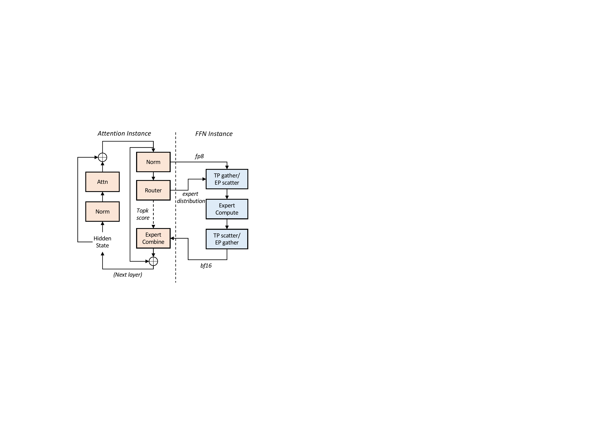
图 8：AFD 架构中的模块解聚。FFN 可以以 TP-only、EP-only 或混合 TP+EP 方式部署，取决于硬件和模型架构。
:::
本节描述 AFD 系统的实现细节。如图 8 所示，AFD 架构由两个主要组件组成： （1）注意力实例：负责计算注意力模块，管理 KV 缓存，并执行 MoE 模块中的非专家计算操作（例如路由器）。对于 Step-3，采用本地 DP 注意力机制，其中每个 GPU 处理一批独立数据。 （2）FFN 实例：直接处理纯 MoE 计算和 TP 或 EP 所需的多 GPU 通信。由于 FFN 可以以 TP-only、EP-only 或混合 TP+EP 方式部署，FFN 实例设计灵活，可相应配置。
使用 TP-only FFN 作为示例，其中所有 MoE 专家的权重以张量并行方式分片。当 FFN 实例从注意力实例接收数据时，首先执行 all-gather 操作以收集 TP 区域的数据。计算后，执行 reduce-scatter 操作以聚合和分散结果回原始 GPU，然后 token 被传输回注意力实例。
系统可以配置为同时支持多个注意力和 FFN 实例。在通信期间，注意力实例将 FP8 token（从上游归一化后的 BF16 激活量化）广播到 FFN 实例；相反，FFN 实例返回 BF16 输出到注意力实例以保留高残差精度。对于 Step-3，由于 FFN 实例以混合 EP+TP 方式跨越多台机器，注意力实例引入了一个归约模块来组合来自多个 FFN 节点的 所有部分 EP 结果。此外，注意力实例还需要传输一些小型元数据，例如专家分布和 FP8 张量缩放因子。专家分布随后用于分派 token 并为高效专家计算形成有组织的输入。元数据通常与隐藏状态相比很小，因此可以忽略不计。
AFD 系统的设计简单，允许轻松集成不同的模型和服务框架。例如，注意力的开发基于 vLLM，只需最小更改，而 FFn 实例仅基于轻量级 C++ 通信库和简单的 PyTorch 接口实现，没有特殊依赖。
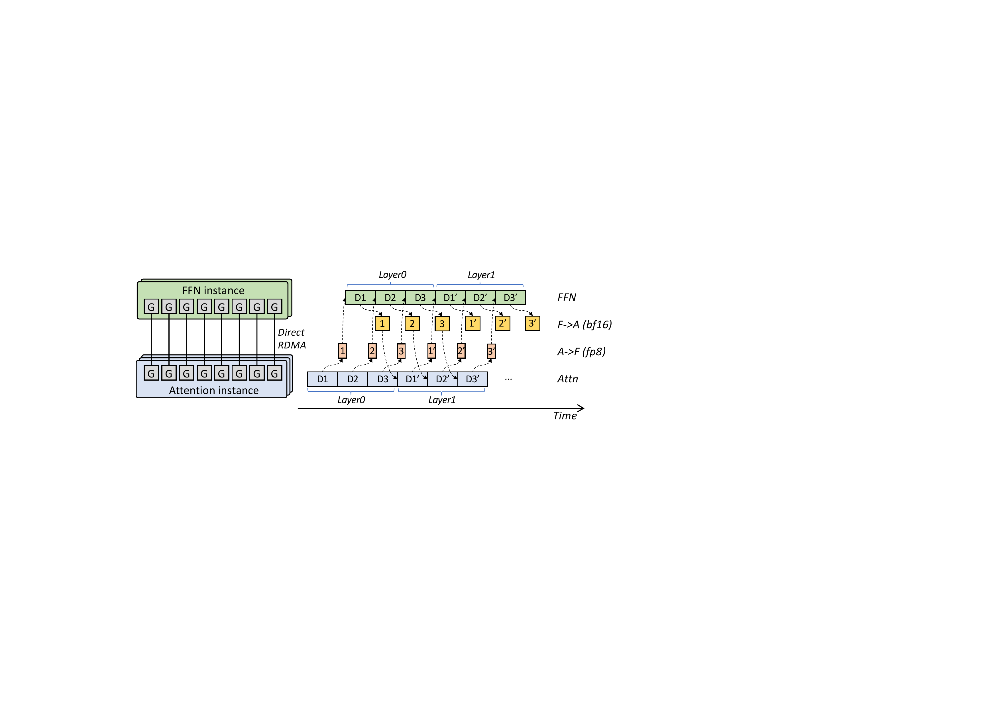
图 9：AFD 架构的通信拓扑和多阶段流水线。
:::
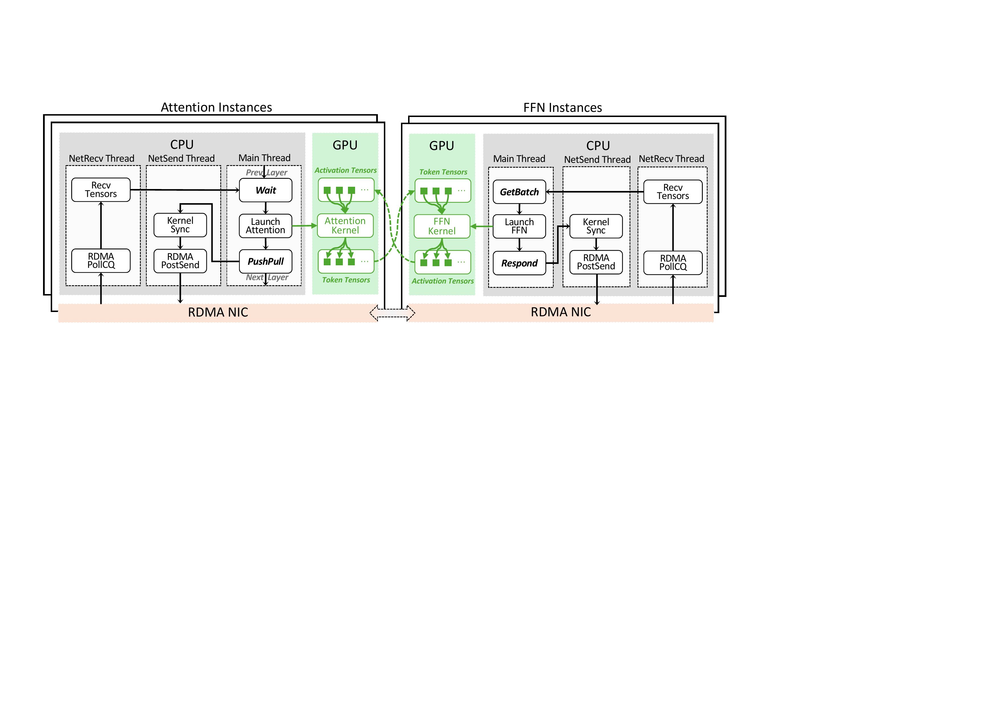
图 10：StepMesh 专为 AFD 定制的通信工作流。
:::
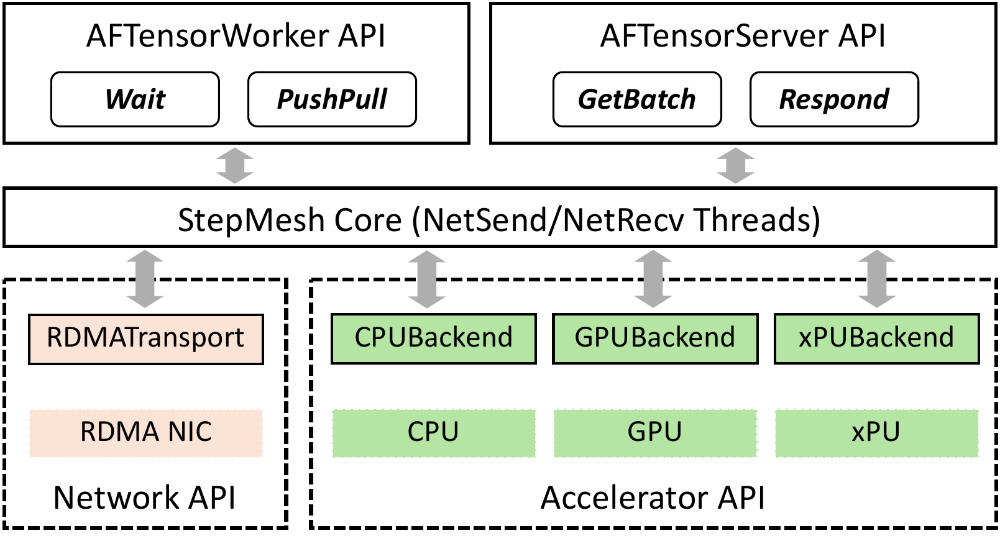
图 11：StepMesh 框架支持多个加速器。AFTensorWorker 和 AFTensorServer API 分别用于注意力和 FFN 实例。
:::
多阶段流水线。 Step-3 采用多阶段流水线来隐藏通信开销，从而最大化整体吞吐量。图 9 说明了多阶段流水线中的数据流。从注意力实例开始，系统接收三个输入样本（D1、D2、D3）。这些样本被顺序处理，然后通过网络传输到 FFN 实例进行计算。通过仔细的工作负载协调，每个计算阶段的计算时间几乎相同，实现高效流水化并最小化空闲期。通信拓扑支持 GPU 之间的直接 RDMA，允许数据与最小延迟并行流式传输，可以轻松被计算隐藏。注意，图中为简单起见区分了 A→F 和 F→A 通信路径。然而，它们表示两个独立的通信，不竞争网络带宽，允许它们在实践中并发执行。当（D1、D2、D3）顺序返回到注意力实例时，系统可以流式方式开始处理下一层，图中标注为（D1', D2', D3'）。这种设计允许系统在高吞吐量下保持低延迟，因为关键路径不会延迟每个样本的处理。
其他实现细节。 将 embedding 层和 LM head 层与注意力实例放在一起，因为它们计算开销很小。为关键路径中的大多数内核开发了定制的内核优化，例如 FP8 GEMM 和 Flash Attention。对于高效的 TP 或 EP 的节点内 NVLink 通信，利用 NVLS API 实现 all-gather 和 reduce-scatter 操作，这些操作不仅可以饱和 NVLink 带宽，还可以显著降低 GPU SM 使用率（特别是，all-gather 操作是 SM 免费的）。低 SM 使用率对于高效的通信-计算重叠至关重要。
AFD 对通信库提出了严格的性能要求。对于 3 阶段流水线，AFD 要求在 272 $\mu$s 内完成所有 FP8 token、缩放因子、专家分布和 BF16 激活在所有注意力和 FFN 实例之间的传输。现有的通信库难以始终满足这一要求。此外，当前的通信库如 NCCL 和 DeepEP 引入了专门用于通信的额外 GPU SM 使用，固有地损害了注意力和 FFN 的计算速度。AFD 还引入了一种新的通信模式，区别于现有集合操作，支持得不太好。虽然可以使用 ncclSend/ncclRecv 等变通方法，但它们不可避免地会牺牲性能。为了应对这些挑战，开发了 StepMesh，这是一款基于 GPUDirect RDMA 的 AFD 专用通信库，提供超低延迟、零 SM 使用率和灵活的通信。
专为 AFD 流水线定制的通信工作流。 图 10 说明了 StepMesh 的设计选择，以最佳方式与 AFD 流水线阶段对齐。 1）异步 API 和专用线程：StepMesh 提供异步 API，并利用独立线程进行网络接收和发送。每个线程的 CPU 延迟都经过精心设计，以满足严格的延迟要求，确保流畅和高效的数据流。 2）基于 CPU 的操作执行：为避免与计算线程争用 GPU SM 资源，StepMesh 在 CPU 上执行所有通信操作，如 RDMA PostSend。它利用 NUMA 感知的 CPU 核心绑定来最小化处理抖动并确保性能稳定。然而，仍然观察到来自 GPU API 的某些抖动，如 GPU 内核同步 API（cudaEventSync）。在未来的迭代中，计划探索 IBGDA 以消除 CPU 上的 GPU 内核同步，从而进一步降低通信延迟。 3）预注册张量以实现高效通信：StepMesh 支持 GPU 张量的直接内存传输，无需序列化/反序列化或内存复制。StepMesh 要求用户在开始通信之前注册张量，通过唯一张量键标识。这种注册过程灵活，可以移除一些耗时的操作。例如，FFN 不需要连接来自不同注意力实例的张量。相反，这些张量可以直接从已注册的张量连续 GPU 内存中切片，简化通信过程并提高效率。
支持异构加速器。 图 11 展示了 StepMesh 框架，设计为高度可扩展，能够集成新型加速器。该框架将加速器视为后端，并建立了一套对 AFD 通信至关重要的后端接口。这些接口包含内存分配和流同步等基本功能。通过遵守这些明确定义的接口，可以轻松地将新加速器集成到 StepMesh 框架中。这种流线化且面向未来的集成过程允许快速采用新兴硬件技术，确保系统保持性能和效率的前沿。StepMesh 支持异构加速器之间的无缝通信，培养不同类型硬件有效协作的环境。这种能力对于构建利用混合加速器实现最佳性能和资源利用的成本效益 AFD 系统至关重要。
与网络的协同演进。 AFD 系统在 Rail-Optimized RoCE 网络上运行。为在 RoCe 上部署 AFD 实施了以下优化： 1）拓扑感知部署：注意力和 FFN 实例策略性地连接到同一 ToR 交换机。这种部署确保任何注意力和 FFN 实例之间的通信经历统一的网络延迟，导致平衡的通信成本并缓解straggling 问题。 2）仅 PFC 传输：禁用拥塞控制，仅依赖 ToR-NIC 优先级流控制（PFC）。PFC 维持无损网络环境，对 AFD 流水线的高性能和低延迟要求至关重要。 3）NIC 端口之间的流量平衡：在网络 中，每个 GPU 通过两个配置为链路聚合的 NIC 端口连接到网络。为了充分利用可用带宽，对于每对通信（例如在注意力和 FFN 实例之间），建立两个 RDMA 队列对并将它们分配给 respective 端口。此设置有效地平衡了两个端口之间的流量，优化数据传输效率并确保组合带宽得到有效利用。
StepMesh 基于 BytePS 开发，也将其作为开源项目提供。感兴趣的开发者可以访问 https://github.com/stepfun-ai/StepMesh 来使用、贡献和改进该库。
端到端性能。 将 Step-3 与 DSv3 进行比较，因为它提出了最具代表性的分布式推理解决方案。其官方博客报告在 H800 上 4,989 平均上下文的持续平均解码吞吐量为 1,850 tokens/GPU/s (TGS)。在 profiling 中报告了更高的峰值性能，在 H800 上以 4,096 上下文长度达到 2,324 TGS。这两个数字都是在 20 tokens/s 解码 SLA 下获得的。
为进行直接比较，还在最新的 Hopper GPU 上测试 Step-3 的 4,096 平均上下文长度解码。GEMM 以 FP8 精度运行。在遵守 20 tokens/s 解码 SLA 的同时，Step-3 在长期平均达到 3,910 TGS，在峰值分钟内达到 4,039 TGS（使用 FP8 注意力），比 DSv3 高约 74%。
表 8：20 tokens/s 解码 SLA 下与 DSv3 报告数的性能比较
| 模型 | 平均上下文长度 | Hopper GPU 数量 | 峰值 TGS |
|---|---|---|---|
| DSv3-blog | 4989 | 144 | 1850 |
| DSv3-profile | 4096 | 128 | 2324 |
| Step-3 (BF16 注意力) | 4096 | 40 (3A2F) | 3321 |
| Step-3 (FP8 注意力) | 4096 | 32 (2A2F) | 4039 |
| Step-3 (FP8 注意力) | 8192 | 48 (4A2F) | 2643 |
仍在努力实现一些实现细节以减少抖动并使平均吞吐量更接近峰值吞吐量。这些数字是在没有 MTP 的情况下获得的。正如第 5.2 节所解释的，Step-3 可以在 H20 以外的加速器上从 MTP 中显著获益。粗略估计，由于注意力效率可以翻倍，而 FFN 保持相同（没有 MTP 时 MFU 已经很高），改进 50% 或更多（对于更长上下文）。
对于上述 4K 上下文长度的情况，使用"2A2F"部署，这意味着两个注意力实例加两个 FFN 实例，总共 32 GPU。总批大小为 6,144，分为三个微批次 2,048 以填充 3 阶段流水线。对于不同的平均上下文长度，只需扩展注意力实例。例如，对于 8K 平均上下文长度，可以使用"4A2F"并保持与 6,144 相同的总批大小。每个组件的延迟和 MFU 以及总网络流量将保持不变，因此 SLA 仍然成立，总吞吐量保持不变。峰值 TGS 将下降到约 $4039\times(2+2)/(4+2)=2693$。读者可以推断更长上下文的部署解决方案和性能数字，例如"16A2F"用于平均 32K 上下文长度，898 TGS 等。
请注意，上述场景是 Step-3 与使用 EP 部署的 DSv3 相比成本节省最少的场景。Step-3 的优势将随着上下文变长和使用比 H800 更便宜的硬件而扩大。
消融：注意力量化。 之前 Step-3 的结果是使用 FP8 注意力。还测试了 BF16 注意力以了解量化的收益。由于注意力成本增加，使用"3A2F"，总批大小为 6,048，接近之前的 6,144。每个注意力实例然后为每个微批次处理 6,048/3/3=672 个样本。如表 8 所示，结果为 3,321 TGS，比 FP8 注意力低约 18%。但仍然比 DSv3 高出很大幅度。
消融：MFA。 为进一步了解性能收益，对 Step-3、DSv3 和 Qwen3-235B 的注意力层进行了消融研究。它们代表三种不同的注意力设计——MFA、MLA 和 GQA。由于仅测试注意力层，数量也反映了实际 AFD 部署中注意力实例的性能。如表 9 所示，MFA-Step-3 实现最低延迟，其次是 MLA-DSv3 和 GQA-Qwen3。在 H20 和 A800 上性能差距扩大，表明 MFA 在较低端加速器上更有效。差距在更长上下文长度时也更大，这与第 5 节中的分析一致。
表 9：MFA/MLA/GQA 性能比较
| 上下文长度 | 注意力类型 | 每注意力层时间（微秒）H800 | 每注意力层时间（微秒）H20 | 每注意力层时间（微秒）A800 |
|---|---|---|---|---|
| 8k | MFA-Step3 | 281 | 438 | 531 |
| 8k | MLA-DSv3 | 372 | 1252 | - |
| 8k | GQA-Qwen3 | 382 | 812 | 791 |
| 32k | MFA-Step3 | 791 | 1452 | 1484 |
| 32k | MLA-DSv3 | 1125 | 4817 | - |
| 32k | GQA-Qwen3 | 1391 | 3042 | 3010 |
消融：将 Step-3 扩展到 >600B。 读者可能想知道 Step-3 的优势在多大程度上是由于总参数少于 DSv3。考虑了将 Step-3 的 MoE FFN 升级到 600B 参数区域的情况，这与 DSv3 大小相似。由于 FFN 加倍，需要"4F"而不是"2F"以保持每个 token 延迟不变。然而，假设不增加每个 token 激活的参数，升级的 Step-3 将遇到与 DSv3 相同的过度稀疏问题并面临网络带宽限制。计算显示，$400\text{Gbps} \times 8$ 网络只能为每个 FFN 实例维持 3,072（8 位分派，16 位组合）的微批次。因此，最终解决方案是"3A4F"，运行三个 3,072 的微批次。每个 A 和 F 的负载与原始 Step-3 相同或更少，因此 50ms TPOT SLA 仍然成立。在这种情况下，TGS 为 3,291。它显示了过度稀疏的影响（第 6.1 节），与原始 Step-3 的 4,039 相比。尽管如此，它仍然比使用 DeepEP 的 DSv3 的 2,324 高得多。如果进一步与 DSv3 在使用 BF16 运行注意力上保持一致，根据分析，估计这样的升级 Step-3 将运行约 2,880 TGS——它显示了 AFD 相对于纯 EP 的优势，与 DSv3 的 2,324 相比，同时使用更多 GPU 进行单个部署。
本文介绍了 Step-3，以及其模型-系统协同设计如何实现与类似规模 LLM 相当的解码效率水平。同时，还解释瞭如何利用 AFD 进行分析并实现 Step-3 的潜力。作者的下一 步是启用 MTP 并评估其解码性能增益。未来，将致力于探索新的注意力变体，继续推动模型量和系统成本的帕累托前沿。还分析了今天的互连限制了 MoE FFN 的稀疏度（如果目标是高效解码）。正在与硬件供应商合作解决这一问题的方案。通过适当的互连，将为 FFN 追求更多稀疏度。
多矩阵分解注意力（MFA）：提出了一种新颖的注意力机制，能够显著减少 KV 缓存大小和计算量，同时保持高注意力表达能力，算术强度为 128，平衡了硬件效率。
注意力-FFN 解聚（AFD）：设计了分布式推理系统架构，将注意力和 FFN 层分离到专用子系统中，实现了两部分的独立优化和灵活扩展。
硬件感知 MoE 设计：分析了 MoE 稀疏度与硬件特性的匹配关系，提出最优稀疏度概念，确保模型在各种硬件上都能高效运行。
StepMesh 通信库：开发了专用的低延迟通信库，实现零 SM 占用和异构硬件支持。
实际性能突破：在 Hopper GPU 上实现了每 GPU 每秒 4,039 个 token 的解码吞吐量，比 DeepSeek-V3 高出约 74%。
实验对比不够全面：主要与 DeepSeek-V3 进行对比，未与其他最新的开源模型进行全面性能比较。
未讨论长上下文的具体场景：虽然声称随上下文变长优势增大，但未详细说明超长上下文（如 100K+）下的实际表现。
MTP 潜力未充分验证：仅进行了理论分析，未展示实际部署 MTP 后的性能数据。
大规模语言模型服务：适合需要高吞吐量的商业 LLM 服务部署。
长上下文应用：适合需要处理长文档、长对话的场景。
成本敏感的 AI 服务：适合需要在有限预算下最大化推理能力的应用。
深入探索 MTP 的实际部署效果。
进一步优化线性注意力的混合架构设计。
探索更多硬件平台（包括国产芯片）的适配优化。
研究更高效的 MoE 路由策略以进一步提升稀疏度。